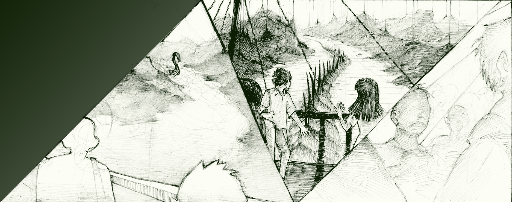

梦的彼端
—— 描绘梦境，分析释梦
梦的世界非常精彩，有无限的可能。梦里包含了我们很多的信念及 情感，通过梦，我们可以探触到内心真实的自己。
您可以随意在这里里记录下您的梦的故事：记忆深刻的梦、特殊的 梦、连续的梦或自己认为重要的梦。
了解梦就是了解自己的真实情绪状态，通过对梦的描述以及绘画， 由专业心理专家对您的梦进行分析，帮您梳理困惑、释放压力。

- 

-
zz
梦的一句话：我很饿，一个人走在绿豆星球，突然出现一个玻璃体的龟，龟闪烁着光，晃我的眼，喷射碎玻璃渣划伤了我，这时一道闪电差点儿劈到死我，我用尽全身力气，喷射出最后的肛门能量想要逃离绿豆星，可还是无济于事，不过惊喜是，我发现了我的脐带，正努力化成鹿…
程志宏
梦者将自己的梦境命名为《我很饿》，饿在心理学当中有“口欲期”的意义，需要不断的靠进食或者索取来获得满足感。“肛门能量”刚好对应着“肛欲期”，特点是通过控制感来获得存在感。梦境的场所是绿豆星球，这是一个大胆的想象，孤独的行走，似乎是回到了母亲的子宫里，对外界一无所知，而透明的乌龟，也是海底的生物。闪电、玻璃体发出的光，都是外界的刺激，玻璃渣的划伤，都表明对外界事物的恐惧，或者有被吞没的担忧。通过肛门能量尝试逃离，挣扎着想要逃离不安全的环境，可能暗示着梦者对现实中的外界刺激都是比较敏感的。而此时梦者寻找到了自己的脐带，婴儿通过脐带与母体链接，因此获得了一定的安全感和归属感。表明梦者现实中对关系和安全感的渴望。转化为鹿，可以解读为适应环境的本领，但同时保持着对环境的警觉。
-
齐小智
梦见窗外巨大的保安按着我我躲起来，偷偷看他。
游宁
梦主只有一句话。图片上是漆黑的夜晚，孤独无助的小姑凉。窗外有一个形容有点枯槁的保安，右上侧远处有一点点黄色的月亮特别碍眼。 这个保安也许是梦主严厉、内心贫乏的父亲。他从不曾轻易的跟梦主交流，更不曾走近梦主的内心，触碰梦主的情感。但他控制并不允许梦主向外张望，更不允许梦主走出自己的视野。家像一个牢笼，这本应该以警察的角色出现，但因为父亲并没有像真正的权威人物那样的气魄与智慧，也没有像警察那样的声严厉色。所以被梦主投射成保安的形象。父亲到底在害怕什么呢？ 月亮象征着女性和温柔。也许在梦里，那是梦主的母亲。所以形容枯槁的父亲对梦主的禁锢除了害怕梦主离自己而去，也有可能是害怕梦主寻找远在天边的母亲而在于失望的痛苦吧……
-
今敏
出自《paprika》静帧
横田正夫
最初作为漫画家的今敏先生，尝试着在漫画中如实再现梦境，以及加入异世界的元素。而当他转身投入到动画行业之后，他用绚丽变换的镜头画面让梦境与现实交织，而这种梦幻变化的感觉让观众耳目一新，从而获得了巨大的成功。
-
英姿
梦到了一场洪水，一开始有些惊慌，却发现洪水并无恐怖，很宁静，周围的山很美，建筑物逐渐都被淹没，人们也逐渐消失，我独自躺在一片床板上，保持着身体平衡，欣赏着周围好似末日的一切。
于群
巨大的洪水，即有可能带来灾难和毁灭，也更有可能带来的是重建和新生。 当梦者面对洪水的时候， 开始的恐慌是短暂的，而后面的无惧和宁静悠闲却是面对洪水的主要情绪基调。也许，这场像洪水一样的巨大改变，对于梦者来说带来的更有可能是重建和重生，才使得梦者非常有心情去欣赏这好似末日的一切。但是，尽管梦者看起来很有办法的保持着身体的平衡，但是面对洪水一片床板毕竟显得有些脆弱和单薄。所以想提醒梦者的是，面对生活中现实的翻天覆地改变或变革的时候，需要检视一下自己的各种准备是否做得足够充足。
-
巧巧
梦里水天一线，雾气蒙蒙还下着雨，我变成了小时候，在梦里一直走一直走……
赵咪咪
看起来非常简单的梦境，极简的背后往往蕴含极强的张力。雾气蒙蒙下着雨，视线里一切、包括自己都会显得模糊起来。独自一个人一直走一直走，看画面似乎是在向前走，所以是一个指向未来的梦。可能是说，面对未来的生活，感到了迷茫、孤单无助、前途未卜，但是，同时又相当坚定、心无旁骛走自己的路。不知道巧巧小时候，是否有过这样的心路历程，所以在梦里用过去来表现现在，也可能是小女孩的意向比大姑娘更加贴近迷茫无助、对选择不知是对是错的试误。路面上，雨水映出巧巧的影子，更加显得形单影只，但是从另一个角度说，似乎又是另一个巧巧在陪伴着自己，这另一个巧巧或许是巧巧内在的守护者、陪伴者，亦或者是另一个默默无闻的子人格，也就是性格里看似不显眼却温暖有力可以自我支持的部分。由于梦者巧巧没有透漏自己梦里的情绪，根据梦的画面，红色的衣服，并不难过，我认为是湿漉漉的心情、湿哒哒的成长之旅。梦醒的时刻，往往也很有意义，巧巧醒在一直走的时刻，似乎是在说漫长的旅途，前面是未知的，不知道会发生什么，会有什么好事吗，会有什么坏事吗，一切结束在尚未发生转折的时刻，所以未来会怎样是个需要继续在雾气蒙蒙的雨天里探索的谜。
-
三木
墨绿水乡的气氛时，我正在类似护城河堤最外层下方的沿边为了冒险和猎奇而奔跑，然后同岸的3.4个伙伴（隔着排水渠一样的结构）好像在隐约喊我...
杨湛德
从您的梦里，能看得出您是一个很有活力温柔的女孩，但是您内心和别人是有距离的，对您而言，让别人走进您的内心世界会是一种冒险，就像您在梦里在护城河堤最外层下方的沿边活动一样，伙伴是在隔着很远在喊着您。而您内心深处对于和别人交往是有很深的戒备和悲观，似乎这些感受是来自于您曾经的两段感情的影响，就像您梦里的那两条巨蛇对您的冲击。一个男生显得会比较强壮有力能给到您所需要的保护，另一个男生是暖男类型，能给到您所需要的温暖，您从他们身上都得到了一些您所需要的感受，但您也因此伤痕累累，让您动摇了您对于感情，甚至是人际关系的期待。而现在工作中似乎有男同事对您有好感，让您感受是能帮助您走出过去感情对您的影响，但您又害怕再次受伤，您很是犹豫。或许您的梦在告诉您，每个人都需要人际关系，但人际关系不可能完全满足所有需求，就连爱情也不行，而您需要从中学会如何去更好地自我成长，照顾自己，爱惜自己。
-
十七
深夜，在漆黑的水上，很多焦黑的树干，很多小船在水面穿梭，我在其中一艘船上，路过一个巨大的树干，斜插在水上，向上看不见高度，船从这个树干边漂过的时候，突然张开了几个巨大的金色眼睛，只有一半，能看看见细长的瞳孔，满眼都是斑斓耀眼的金色。
林海
整个画面和梦境看起来似乎是精子重游子宫的一个场景，焦黑的树干意味着男性的生殖器，而水面上的小船则似乎是很多很多的精子，整片水域则意味着子宫。而在整幅画面中，只有“我”是如此特别，“我”看到那个金色的眼睛向“我”散发着金色的光芒。也许我们在现实生活中遇到了一些挫折和挫败感，于是我们需要在梦中来重新证明自己，“我”是如此与众不同，我们击败了所有其他的竞争者，成功到达子宫，在这个程度上来讲，我们是胜利者，所以我们可以以此证明我们在现实生活中遇到的挫折和挫败感，并不意味着什么，我们是优秀的，而不应该是自卑的。
-
海啸男
做的什么梦忘记了，只记得图像。梦见这样的大桥，全部是象牙白色正面都镶嵌着金色的金属表盘非常机械，周围被白色的金属格子（片？）重叠遮挡，非常好看，上面的凸起可能更对称一些（由于是前一天的梦，有一些记不清了……或许跟之前海边的梦是一个国家或者城市，因为建筑上的凸起风格跟类似），梦里的色调黄黄灰灰的，但比起我画的，阳光仿佛更好一些。
杨湛德
您的梦似乎也是在表达了您在走出学校，面向社会时对于人际关系的担忧。那一根根大桥的柱子表明了您现在已经习惯了大学时的人与人之间没有过多利益冲突的交流模式，那种比较单调，也有比较固定规律可循的人际交往。但是面对进入社会后的生活工作，您在开始焦虑担心了，您害怕进入社会后人与人之间的关系会变得多变，变得有利益冲突，您担心自己 无法应对那些多变的人际关系。不过您梦里的阳光会意味着您内心对于人际关系还是充满了希望，您依然相信人与人之间还是会有温暖。或许您内心也是因为对于未来有很多焦虑，所以您才会很有多事情有所担忧，想对所有事情都想能掌控。建议您尝试去感受一下您内心是在对什么焦虑着，这样您才能更好面对。
-
海啸男
梦见两位神夫妇带着自己的一儿一女两个孩子还有一只会飞的猫和一只会飞的狗生活在一所会飞的房子里，一天神夫妇驾驶着飞屋上升到平高空看云，顺便带猫狗练习飞，这是时大片的云开始凝结成风暴云柱，神夫妇控制着飞屋闪避开所有小的云柱后，竟然跟一个已经凝结好的巨大云柱打了个照面，云柱是深紫色的，已经具象化出了栅栏和大
杨湛德
您的梦更多是反映了您对家的看法。家给您的感觉似乎是一直在漂着，像无根的浮萍，似乎没有给您带来足够的安全感，就像您梦里那会飞的小屋一样。您在梦里梦到和云柱相遇的过程，意味着父母给到您的是巨大压力，以至于您会想着需要远离他们。但是您内心依然对父母是有爱的，您希望能得到他们的理解和关心，您很想找回以前爱您的父母。这也可能是因为您现在在生活工作当中也遇到了种种困难，您内心里是有着很多忐忑不安的，您对自己很不自信，但您也开始慢慢意识到了自己“是时候接班父母”，您开始尝试着全力以赴独自地去面对和解决问题，似乎是因为父母也无法帮助您去解决您当前的问题，就像梦里的那男孩女孩费劲方法对抗坏神一样。您的梦里的旧神和主流神之间的战争象征着您内心对父母依赖和自我独立的抗争，每个人都会有脱离父母而去寻找属于自己生活的时候，但这样的脱离不代表着得不到父母的关心了，而是意味着这是我们需要学会自己照顾关心自己的开始。
10月12日- 15日“染色体”第六届中国独立动画电影论坛， 力邀日本大学教授心理学博士横田正夫先生，从心理学角度，
解析今敏 导演作品中的关于梦境的描绘。
了解更多详情，请关注 @中国独立动画电影论坛